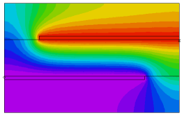

|
3d_capacitor |

  
|
|
3d_capacitor |
|
{ 3D_CAPACITOR.PDE
This problem is an extension of "3D_EXTRUSION_SPEC.PDE", and shows
a capacitor formed by two metal strips of different size separated
by a sheet of dielectric.
}
TITLE '3D Capacitor'
COORDINATES CARTESIAN3
SELECT { rename the axes } alias(x) = "X(mm)" alias(y) = "Y(mm)" alias(z) = "Z(mm)" { paint all contours } PAINTED
VARIABLES V
DEFINITIONS Kdiel= 6 Kmetal=1e6 Kair=1 |
 |
K = Kair { default K to Kair - this will change in some layers/regions }
V0 = 0
V1 = 1
Eps0 = 8.854e-12 { Farads/M }
Eps0mm = 0.001*Eps0 { Farads/mm }
W = integral(0.5*K*eps0mm*grad(V)^2) { Stored Energy }
C = 1.0e6*2*W/(V1-V0)^2 { Capacitance in microFarads }
EQUATIONS
V : DIV(K*GRAD(V)) = 0
EXTRUSION
SURFACE "Bottom" Z=0
LAYER "Bottom Air"
SURFACE "Bottom Air - Metal" Z=0.9
LAYER "Bottom Metal"
SURFACE "Bottom Metal - Dielectric" Z=1
LAYER "Dielectric"
SURFACE "Top Metal - Dielectric" Z=2
LAYER "Top Metal"
SURFACE "Top Metal - Air" Z=2.1
LAYER "Top Air"
SURFACE "Top" Z=3
BOUNDARIES
SURFACE "Bottom" NATURAL(V)=0 { Insulators top and bottom }
SURFACE "Top" NATURAL(V)=0
REGION 1 { this is the outer boundary of the system }
LAYER "dielectric" K = Kdiel { all other layers default to Kair }
START(0,0)
LINE TO (5,0) TO (5,5) TO(0,5) to close
LIMITED REGION 2 { the larger bottom plate }
SURFACE "Bottom Air - Metal" VALUE(V)=V0
SURFACE "Bottom Metal - Dielectric" VALUE(V)=V0
LAYER "Bottom Metal" K = Kmetal
START(1,0)
LAYER "Bottom Metal" VALUE(V)=V0
LINE TO (4,0)
LAYER "Bottom Metal" NATURAL(V)=0
Line TO (4,4) TO (1,4) to close
LIMITED REGION 3 { the smaller top plate}
SURFACE "Top Metal - Dielectric" VALUE(V)=V1
SURFACE "Top Metal - Air" VALUE(V)=V1
LAYER "Top Metal" K = Kmetal
START(2,1)
LINE TO (3,1) TO (3,5)
LAYER "Top Metal" VALUE(V)=V1
LINE TO (2,5)
LAYER "Top Metal" NATURAL(V)=0
LINE to close
MONITORS
CONTOUR(V) ON Y=2.5
PLOTS
GRID(X,Z) ON Y=2.5
CONTOUR(V) ON X=2.5 REPORT(C) as "Capacitance(uF)"
CONTOUR(V) ON Y=2.5 REPORT(C) as "Capacitance(uF)"
CONTOUR(V) ON Z=1.5 REPORT(C) as "Capacitance(uF)"
CONTOUR(1/K) ON Y=2.5 as "Material"
END
Page url: index.html?applications_electricity_3d_capacitor.html